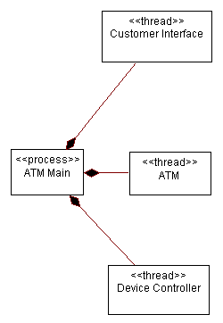
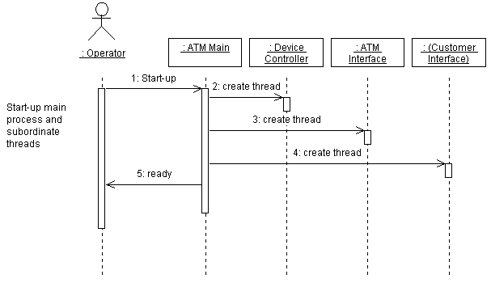

| Task: Describe the Run-time Architecture |
|
 |
| This task defines a process architecture for the system in terms of active classes and their instances and the relationship of these to operating system threads and processes. |
| Disciplines: Analysis & Design |
|
Purpose
-
To analyze concurrency requirements,
-
To identify processes and their lifecycles
-
To identify inter-process communication mechanisms and allocate inter-process coordination resources
-
To distribute model elements among processes.
|
Relationships
| Roles | Primary Performer:
| Additional Performers:
|
| Inputs | Mandatory:
| Optional:
|
| Outputs |
|
| Process Usage |
|
Main Description
Active objects (that is, instances of active classes) are used to represent concurrent threads of execution in the
system: notionally, each active object has its own thread of control, and, conventionally, is the root of an execution
stack frame. The mapping of active objects to actual operating system threads or processes may vary according to
responsiveness requirements, and will be influenced by considerations of context switching overhead. For example, it is
possible for a number of active objects, in combination with a simple scheduler, to share a single operating system
thread, thereby giving the appearance of running concurrently. However, if any of the active objects exhibits blocking
behavior, for example, by performing synchronous input-output, then other active objects in the group will be unable to
respond to events that occur while the operating system thread is blocked.
At the other extreme, giving each active object its own operating system thread should result in greater
responsiveness, provided the processing resources are not adversely impacted by the extra context switching overhead.
In real-time systems,  Artifact: Capsules are the recommended way of modeling concurrency;
like active classes, each capsule has its own notional thread of control, but capsules have additional encapsulation
and compositional semantics to make modeling of complex real-time problems more tractable. Artifact: Capsules are the recommended way of modeling concurrency;
like active classes, each capsule has its own notional thread of control, but capsules have additional encapsulation
and compositional semantics to make modeling of complex real-time problems more tractable.
This task defines a process architecture for the system in terms of active classes and their instances and the
relationship of these to operating system threads and processes. Equally, for real-time systems, the process
architecture will be defined in terms of capsules and an associated mapping of these to operating system processes and
threads.
Early in the Elaboration phase this architecture will be quite preliminary, but by late Elaboration the processes and
threads should be well-defined. The results of this task are captured in the design model - in particular, in the
process view (see Concept: Process View).
|
Steps
|
Analyze Concurrency Requirements
|
Purpose
|
To define the extent to which parallel execution is required for the system. This definition will help
shape the architecture.
|
During Task: Identify Design Elements, concurrency requirements driven
primarily by naturally occurring demands for concurrency in the problem domain were considered.
The result of this was a set of active classes, representing logical threads of control in the system. In
real-time systems, these active classes are represented by Artifact: Capsule.
In this step, we consider other sources of concurrency requirements - those imposed by the non-functional requirements
of the system.
Concurrency requirements are driven by:
-
The degree to which the system must be distributed. A system whose behavior must be distributed across
processors or nodes virtually requires a multi-process architecture. A system which uses some sort of Database
Management System or Transaction Manager also must consider the processes which those major subsystems introduce.
-
The computation intensity of key algorithms. In order to provide good response times, it may be necessary to
place computationally intensive activities in a process or thread of their own so that the system is still able to
respond to user inputs while computation takes place, albeit with fewer resources.
-
The degree of parallel execution supported by the environment. If the operating system or environment does
not support threads (lightweight processes) there is little point in considering their impact on the system
architecture.
-
The need for fault tolerance in the system. Backup processors require backup process, and drive the need to
keep primary and backup processes synchronized.
-
The arrival pattern of events in the system. In systems with external devices or sensors, the arrival
patterns of incoming events may differ from sensor to sensor. Some events may be periodic (i.e. occur at a fixed
interval, plus or minus a small amount) or aperiodic (i.e. with an irregular interval). Active classes representing
devices which generate different event patterns will usually be assigned to different operating system threads,
with different scheduling algorithms, to ensure that events or processing deadlines are not missed (if this is a
requirement of the system). This reasoning applies equally to capsules, when used in the design of real-time
systems.
As with many architectural problems, these requirements may be somewhat mutually exclusive. It is not uncommon to have,
at least initially, conflicting requirements. Ranking requirements in terms of importance will help resolve the
conflict.
|
Identify Processes and Threads
|
Purpose
|
To define the processes and threads which will exist in the system.
|
The simplest approach is to allocate all active objects to a common thread or process and use a simple active object
scheduler, as this minimizes context-switching overhead. However, in some cases, it may be necessary to distribute the
active objects across one or more threads or processes. This will almost certainly be the case for most real-time
systems, where the capsules used to represent the logical threads in some cases have to meet hard scheduling
requirements.
If an active object sharing an operating system thread with other active objects makes a synchronous call to some other
process or thread, and this call blocks the invoking object's shared operating system thread, then this will
automatically suspend all other active objects located in the invoking process. Now, this does not have to be the case:
a call that is synchronous from the point of view of the active object, may be handled asynchronously from the point of
view of the simple scheduler that controls the group of active objects - the scheduler suspends the active object
making the call (awaiting the completion of its synchronous call) and then schedules other active objects to run.
When the original 'synchronous' operation completes, the invoking active object can be resumed. However, this approach
may not always be possible, because it may not be feasible for the scheduler to be designed to intercept all
synchronous calls before they block. Note that a synchronous invocation between active objects using the same operating
system process or thread can, for generality, be handled by the scheduler in this way - and is equivalent in effect to
a procedure call from the point of view of the invoking active object.
This leads us to the conclusion that active objects should be grouped into processes or threads based on their need to
run concurrently with synchronous invocations that block the thread. That is, the only time an active object should be
packaged in the same process or a thread with another object that uses synchronous invocations that block the thread,
is if it does not need to execute concurrently with that object, and can tolerate being prevented from executing while
the other object is blocked. In the extreme case, when responsiveness is critical, this can lead to the need for a
separate thread or process for each active object.
For real-time systems, the message-based interfaces of capsules mean that it is simpler to conceive a scheduler that
ensures, at least for capsule-to-capsule communications, that the supporting operating system threads are never
blocked, even when a capsule communicates synchronously with another capsule. However, it is still possible for a
capsule to issue a request directly to the operating system, for example, for a synchronous timed wait, that would
block the thread. Conventions have to be established, for lower level services invoked by capsules, that avoid this
behavior, if capsules are to share a common thread (and use a simple scheduler to simulate concurrency).
As a general rule, in the above situations it is better to use lightweight threads instead of full-fledged processes
since that involves less overhead. However, we may still want to take advantage of some of the special characteristics
of processes in certain special cases. Since threads share the same address space, they are inherently more risky than
processes. If the possibility of accidental overwrites is a concern, then processes are preferred. Furthermore, since
processes represent independent units of recovery in most operating systems, it may be useful to allocate active
objects to processes based on their need to recover independently of each other. That is, all active objects that need
to be recovered as a unit might be packaged together in the same process.
For each separate flow of control needed by the system, create a process or a thread (lightweight process). A thread
should be used in cases where there is a need for nested flow of control (i.e. if, within a process, there is a need
for independent flow of control at the sub-task level).
For example, separate threads of control may be needed to do the following:
-
Separate issues between different areas of the software
-
Take advantage of multiple CPUs in a node or multiple nodes in a distributed system
-
Increase CPU utilization by allocating cycles to other activities when a thread of control is suspended
-
Prioritize activities
-
Support load sharing across several processes and processors
-
Achieve a higher system availability by having backup processes
-
Support the DBMS, Transaction Manager, or other major subsystems.
Example
In the Automated Teller Machine, asynchronous events must be handled coming from three different sources: the user of
the system, the ATM devices (in the case of a jam in the cash dispenser, for example), or the ATM Network (in the case
of a shutdown directive from the network). To handle these asynchronous events, we can define three separate threads of
execution within the ATM itself, as shown below using active classes in UML.

Processes and Threads within the ATM
|
Identify Process Lifecycles
|
Purpose
|
To identify when processes and threads are created and destroyed.
|
Each process or thread of control must be created and destroyed. In a single-process architecture, process creation
occurs when the application is started and process destruction occurs when the application ends. In multi-process
architectures, new processes (or threads) are typically spawned or forked from the initial process created by the
operating system when the application is started. These processes must be explicitly destroyed as well.
The sequence of events leading up to process creation and destruction must be determined and documented, as well as the
mechanism for creation and deletion.
Example
In the Automated Teller Machine, one main process is started which is responsible for coordinating the behavior of the
entire system. It in turn spawns a number of subordinate threads of control to monitor various parts of the system: the
devices in the system, and events emanating from the customer and from the ATM Network. The creation of these processes
and threads can be shown with active classes in UML, and the creation of instances of these active classes can
be shown in a sequence diagram, as shown below:

Creation of processes and threads during system initialization
|
Identify Inter-Process Communication Mechanisms
|
Purpose
|
To identify the means by which processes and threads will communicate.
|
Inter-process communication (IPC) mechanisms enable messages to be sent between objects executing in separate
processes.
Typical inter-process communications mechanisms include:
-
Shared memory, with or without semaphores to ensure synchronization.
-
Rendezvous, especially when directly supported by a language such as Ada
-
Semaphores, used to block simultaneous access to shared resources
-
Message passing, both point-to-point and point-to-multipoint
-
Mailboxes
-
RPC - Remote procedure calls
-
Event Broadcast - using a "software bus" ("message bus architecture")
The choice of IPC mechanism will change the way the system is modeled; in a "message bus architecture", for example,
there is no need for explicit associations between objects to send messages.
|
Allocate Inter-Process Coordination Resources
|
Purpose
|
To allocate scarce resources
To anticipate and manage potential performance bottlenecks
|
Inter-process communication mechanisms are typically scarce. Semaphores, shared memory, and mailboxes are typically
fixed in size or number and cannot be increased without significant cost. RPC, messages and event broadcasts soak up
increasingly scarce network bandwidth. When the system exceeds a resource threshold, it typically experiences
non-linear performance degradation: once a scarce resource is used up, subsequent requests for it are likely to have an
unpleasant effect.
If scarce resources are unavailable, there are several strategies to consider:
-
reducing the need for the scarce resource by reducing the number of processes
-
changing the usage of scarce resources (for one or more processes, choose a different, less scarce resource to use
for the IPC mechanism)
-
increasing the quantity of the scarce resource (e.g. increasing the number of semaphores). This can be done for
relatively small changes, but often has side effects or fixed limits.
-
sharing the scarce resource (e.g. only allocating the resource when it is needed, then letting go when done with
it). This is expensive and may only forestall the resource crisis.
Regardless what the strategy chosen, the system should degrade gracefully (rather than crashing), and should provide
adequate feedback to a system administrator to allow the problem to be resolved (if possible) in the field once the
system is deployed.
If the system requires special configuration of the run-time environment in order to increase the availability of a
critical resource (often control by re-configuring the operating system kernel), the system installation needs to
either do this automatically, or instruct a system administrator to do this before the system can become operational.
For example, the system may need to be re-booted before the change will take effect.
|
Map Processes onto the Implementation Environment
|
Purpose
|
To map the "flows of control" onto the concepts supported by the implementation environment.
|
Conceptual processes must be mapped onto specific constructs in the operating environment. In many environments, there
are choices of types of process, at the very least usually process and threads. The choices will be base on the degree
of coupling (processes are stand-alone, whereas threads run in the context of an enclosing process) and the performance
requirements of the system (inter-process communication between threads is generally faster and more efficient than
that between processes).
In many systems, there may be a maximum number of threads per process or processes per node. These limits may not be
absolute, but may be practical limits imposed by the availability of scarce resources. The threads and processes
already running on a target node need to be considered along with the threads and processes proposed in the process
architecture. The results of the earlier step, AllocateInter-Process Coordination Resources, need to be
considered when the mapping is done to make sure that a new performance problem is not being created.
|
Map Design Elements To Threads of Control
|
Purpose
|
To determine which threads of control classes and subsystems should execute within.
|
Instances of a given class or subsystem must execute within at least one thread of control that provides the
execution environment for the class or subsystem; they may in fact execute in several different processes.
Using two different strategies simultaneously, we determine the "right" amount of concurrency and define the "right"
set of processes:
Inside-out
-
Starting from the Design Model, group classes and subsystems together in sets of cooperating elements that (a)
closely cooperate with one another and (b) need to execute in the same thread of control. Consider the impact of
introducing inter-process communication into the middle of a message sequence before separating elements into
separate threads of control.
-
Conversely, separate classes and subsystems which do not interact at all, placing them in separate threads of
control.
-
This clustering proceeds until the number of processes has been reduced to the smallest number that still allows
distribution and use of the physical resources.
Outside-in
-
Identify external stimuli to which the system must respond. Define a separate thread of control to handle each
stimuli and a separate server thread of control to provide each service.
-
Consider the data integrity and serialization constraints to reduce this initial set of threads of control to the
number that can be supported by the execution environment.
This is not a linear, deterministic process leading to an optimal process view; it requires a few iterations to reach
an acceptable compromise.
Example
The following diagram illustrates how classes within the ATM are distributed among the processes and threads in the
system.

Mapping of classes onto processes for the ATM
|
|
More Information
| Concepts |
|
| Guidelines |
|
| Tool Mentors |
|
© Copyright IBM Corp. 1987, 2006. All Rights Reserved.
|
|